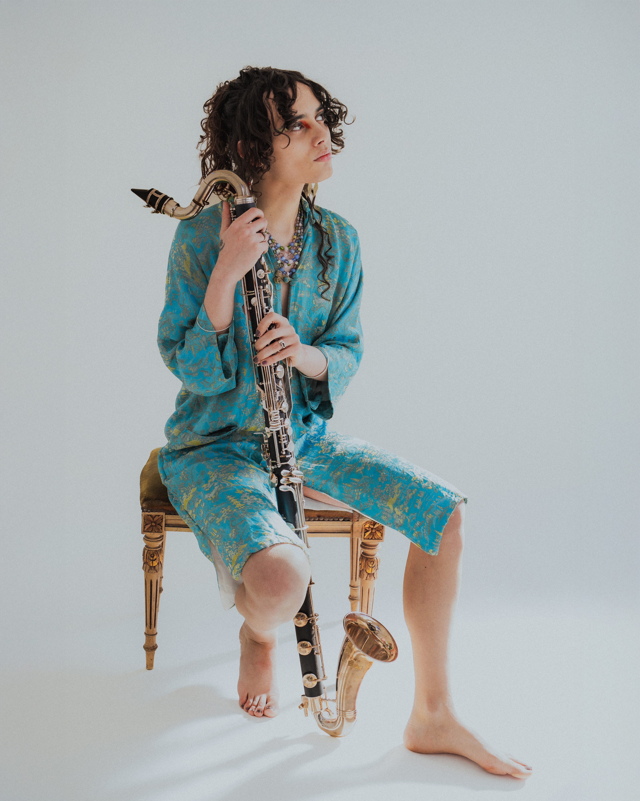
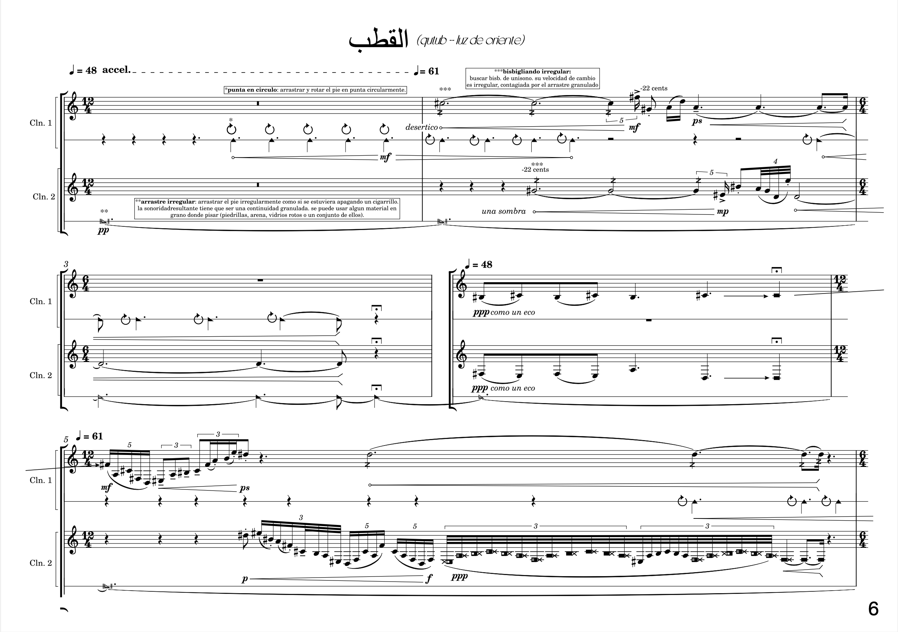
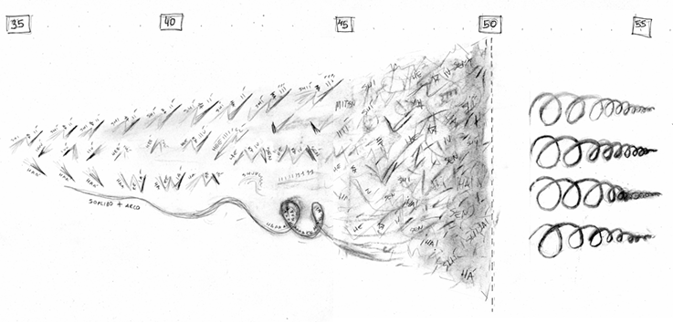
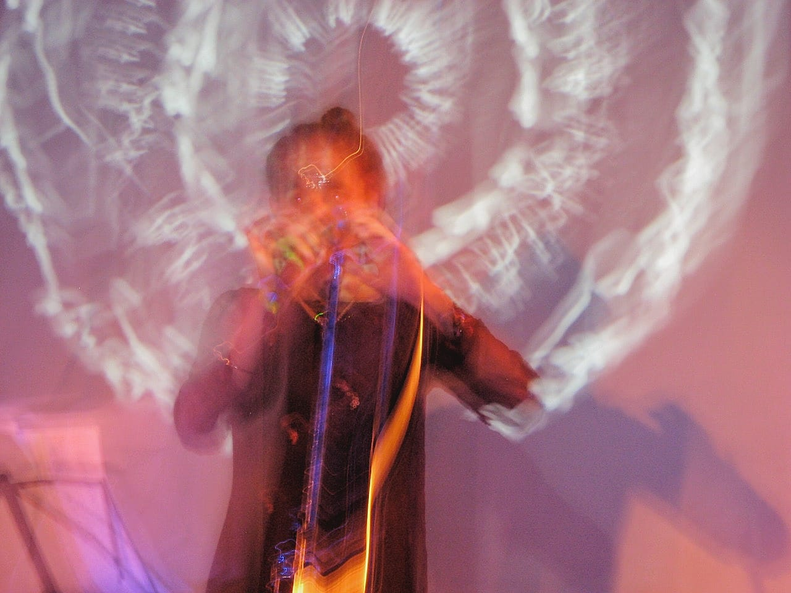
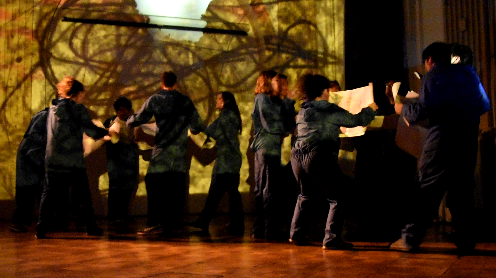
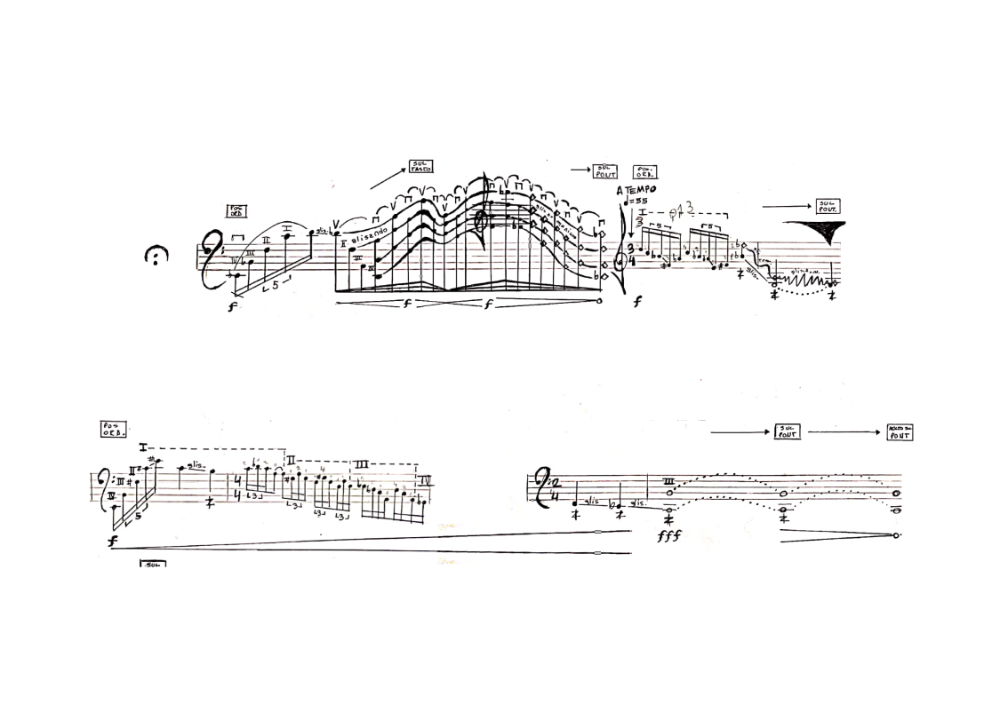
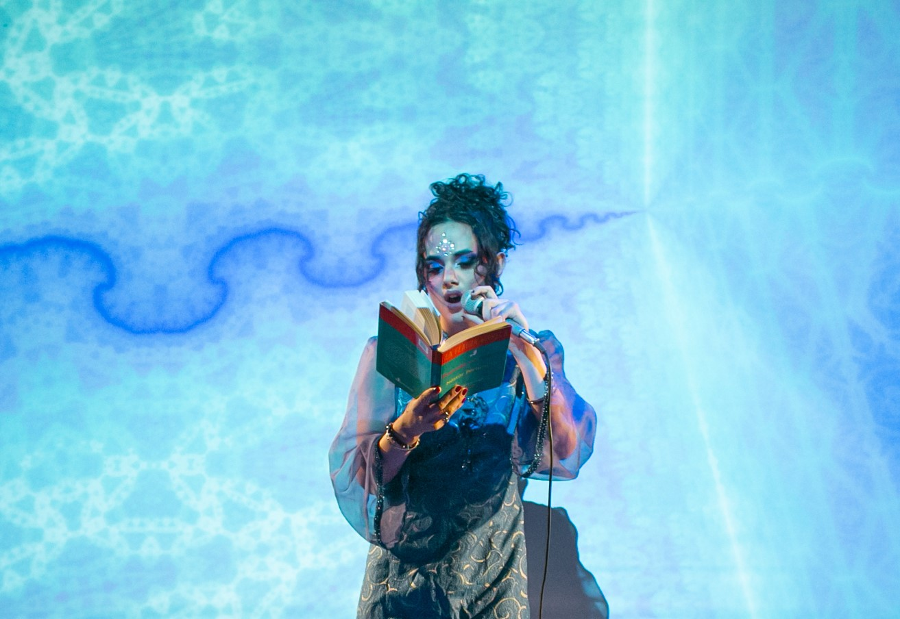
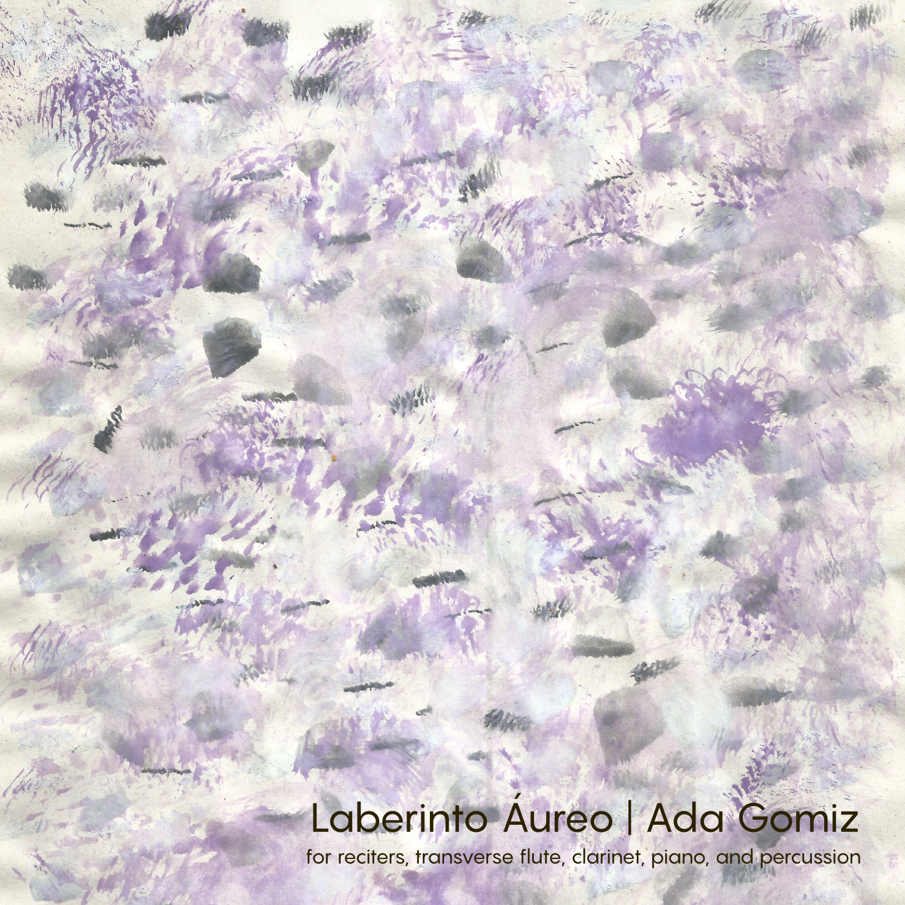
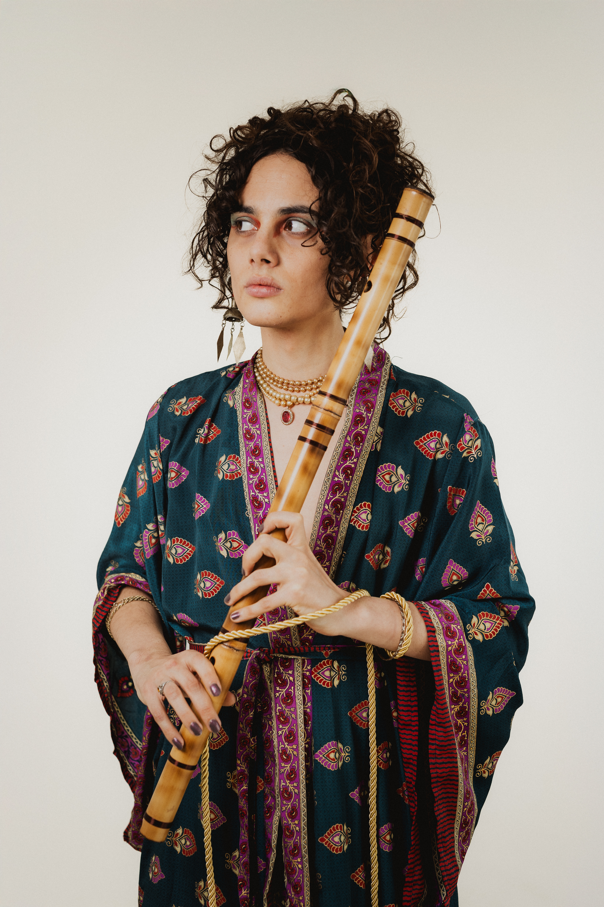

Buenos Aires · ArgentinaBuenos Aires · Argentina
compositora · performer · artista sonora composer · performer · sound artist
Su trabajo explora las intersecciones entre la composición de música de cámara contemporánea y las cosmopoéticas de la literatura neo-barroca latinoamericana. Su práctica incorpora improvisación, arte sonoro, performance y otros mundos intermedialidades. Her work explores the intersections between contemporary chamber music composition and the cosmopoetics of Latin American neo-baroque literature. She engages in practices oriented toward improvisation, sound art, performance, and dreamlike intermedialities.











Compositora · Multiinstrumentista · Artista Sonora · Performer Composer · Multi-instrumentalist · Sound Artist · Performer
Ada Gomiz es compositora, artista sonora, cantante y vientista de Bella Vista, Buenos Aires, Argentina.
Su trabajo explora los intercruces entre la composición de música de cámara contemporánea y literatura neobarroca latinoamericana, explorando intersticios entre lo simbólico, lo gestual, lo matérico y lo estelar.
Habita prácticas orientadas a la improvisación libre y no tan libre, field recording encantatorio, cofradías butohkas y otras intermedialidades oníricas.
Sus obras fueron estrenadas en Alemania, Argentina, Dinamarca e Italia, destacando festivales y ciclos como Darmstadt Ferienkurse, Distat Terra Festival, Slow Festival y Urondo Contemporáneo, así como presentaciones en espacios como Kirsten Kjærs Museum, Espacio Mostro y Arte x Arte en el marco de Bienal Sur.
Se encuentra finalizando la Licenciatura en Música en la Universidad Nacional de Tres de Febrero (UNTREF) y forma parte del equipo de investigación sobre auralidad de la Maestría en Arte Sonoro, dirigido por Raúl Minsgburg.